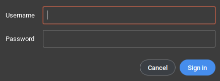
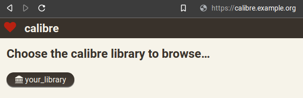

The Calibre library server is a great way to store your eBooks. It allows you to:
- Share your books with others.
- Easily transfer your books between devices and access them from anywhere.
Installation
Install the Calibre package. You might also want rsync to upload books.
apt install -y calibre rsync
mkdir /opt/calibre
Either upload your existing library using rsync. For example to /opt/calibre/.
cd ~/Documents
rsync -avuP your-library-dir root@example.org:/opt/calibre/Or create a library and add a book to it:
cd /opt/calibre
calibredb add book.epub --with-library your-libraryAdd a new user to protect your server:
calibre-server --manage-usersCreating a service
Create a new file /etc/systemd/system/calibre-server.service and add the following:
[Unit]
Description=Calibre library server
After=network.target
[Service]
Type=simple
User=root
Group=root
ExecStart=/usr/bin/calibre-server --enable-auth --enable-local-write /opt/calibre/your_library --listen-on 127.0.0.1
[Install]
WantedBy=multi-user.target
Issue systemctl daemon-reload to apply the changes.
Enable and start the service.
systemctl enable calibre-server
systemctl start calibre-serverA reverse proxy with Nginx
Create a new file /etc/nginx/sites-available/calibre and enter the following:
server {
listen 80;
client_max_body_size 64M; # to upload large books
server_name calibre.example.org ;
location / {
proxy_pass http://127.0.0.1:8080;
}
}Issue a Let's Encrypt certificate. Detailed instructions and additional information.
certbot --nginxNow just go to calibre.example.org. The server will request an username and a password.
After login you will see something like this.
Contribution
48T5XpHTXAZ5Nn8YCypA4aWn1ffQLHJkFGDArXQB6cmrP6cqLY72cu7CR2iq2MmL5Ndu3d47e5MKjGpL4prYgdrTCFAHD9c